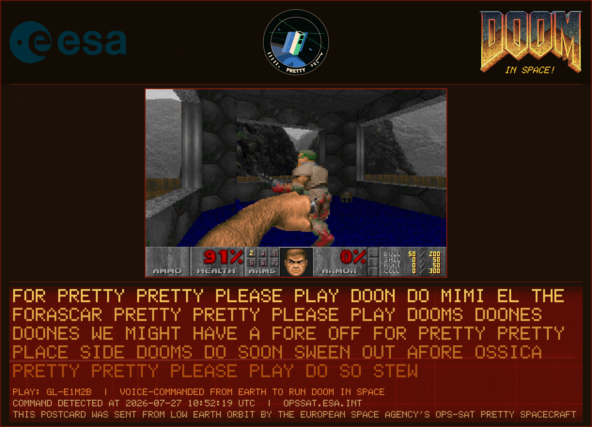
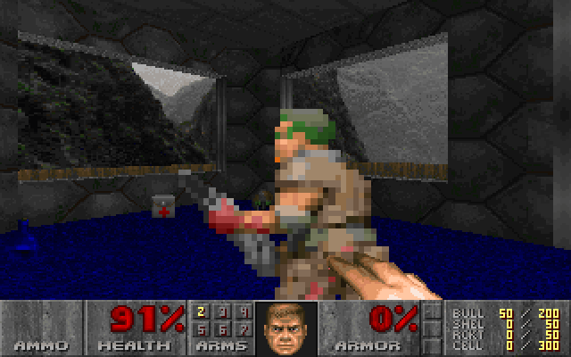

What happened
A radio amateur group based in Oslo transmitted a spoken command on the amateur radio band to OPS-SAT PRETTY, an experimental European Space Agency (ESA) satellite. On board, with no human in the loop, the satellite recorded the radio signal, recovered the voice from the noise, used voice recognition AI to transcribe it to text, recognized the command, launched the 1993 game DOOM, then downlinked a "postcard" image of the moment.
It had never been done before. Satellites are normally commanded with structured, pre-formatted instruction files uplinked on scheduled passes. This is the first time a satellite has been commanded by voice, in plain spoken language, and acted on it autonomously in orbit.

How it works
The command travels from a microphone on the ground to a game launching in space in a handful of steps, all running on the satellite's small onboard computer:
Capture
The satellite's software radio records the faint radio signal as it flies over the ground station.
Narrow in
It finds the voice buried in the noise and tunes into just that sliver of the spectrum.
Transcribe
An onboard speech-to-text AI model turns the recovered audio into words.
Recognize
A matcher checks the words for the command, tolerant of the mangling a noisy radio link causes.
Launch DOOM
On a match, the satellite plays DOOM and renders a postcard from the gameplay and the signal, then downlinks it.
A first
DOOM, played in orbit, launched by a human voice from the ground. The first time a satellite has been commanded by voice.

The milestone passes
The command was detected and DOOM launched on two satellite passes over Oslo on the same day, with the Oslo radio amateur team transmitting:
Run 6
A synthesised voice message was transmitted on a loop. Three of the six recordings detected the command and launched DOOM.
Run 7
This time an operator spoke the command live into a microphone, no recording. The satellite detected it again, the first detection of a live human voice from orbit.
Here is exactly what the satellite's onboard transcription produced from one recording, mangled by the noisy link but unmistakable:
"FOR PRETTY PRETTY PLEASE PLAY DOON DO ... THE FORASCAR PRETTY PRETTY PLEASE PLAY DOOMS ... AFORE OSSICA PRETTY PRETTY PLEASE PLAY ..."
The command was repeated on a loop precisely so that, even when the noise turned "DOOM" into "DOON" or "DOOMS", at least one clean copy would get through.
Other passes came through a little cleaner. Across the successful passes (Run 6 and Run 7) some recordings transcribed the command more clearly, for example Run 7's live-voice pass, transcribed on board as AND FAR BRIEFLY PLAYING DOOM STEAM DOOM PRECIPATED, with DOOM itself spelled out.
Who made it happen
The experiment depends on the amateur radio community, who form its ground segment. The transmissions were made by two volunteer radio amateur teams:
- Oslo Group of the Norwegian Radio Relay League (NRRL), call sign LA4O, who ran the successful July 2026 campaign from a rooftop in Oslo.
- Radio amateurs in Legnica, Poland (SQ6RDP and SQ6QV), who ran the earlier link tests from April to June 2026.
Full radio amateur credits are in the project acknowledgements.
The experiment flies on the European Space Agency's OPS-SAT PRETTY spacecraft, with passes scheduled and operated through the OPS-SAT mission operations. Thanks also to Maximilian Henkel, Ólafur, and Vladimir for their collaboration and support throughout the campaign.
The experiment is led by Georges Labrèche, principal investigator and researcher.